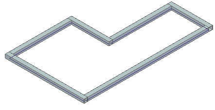
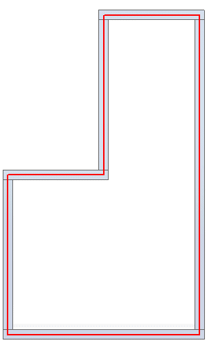
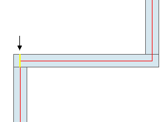
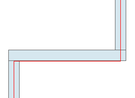
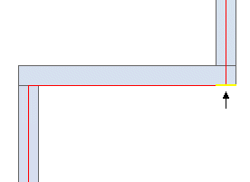
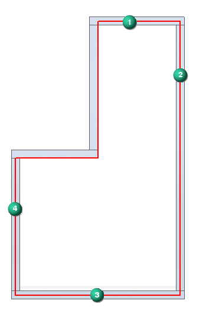
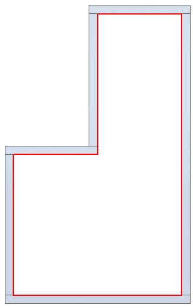

Activity: Editing frame position using hot keys
This activity requires you download the activity file for the Corner Treatment Options activity. If you have not worked that activity, download the activity file and complete step 1 of the activity.
Open edit04.asm.

Change to a Top view.

Notice that the frame is positioned center on the sketch. Reposition the frame outside the sketch. A global change does not work for this case. Each frame needs to reposition individually.
In PathFinder, click Frame_1. Click the Edit Cross Sections button on the context toolbar. It is easier to reposition the frames by working from the top view.
On the Frames command bar, click the Edit Cross Sections step.
Notice that all cross sections for Frame_1 set highlight. Reposition one cross section at a time. Click the Deselect button.
There are six cross sections in Frame_1 set. You will be instructed on positioning two frames and then you will reposition the remaining frames on your own. Select the cross section shown and then click the Accept button.

Press the up arrow key once. This positions the frame outside the sketch element. Do not click Finish.

Click the Edit Cross Sections button again.
Click the Deselect button. Select the cross section shown and then click the Accept button.

Press the left arrow key once. This positions the frame outside the sketch element. Click Finish.

Reposition the remaining frames (1–4). When finished the result should look like the following image.

If you see no change with the right and left arrows, try the up and down arrows. The right and left arrows may be moving the frame in a direction normal to the view.
Close edit_04.asm.